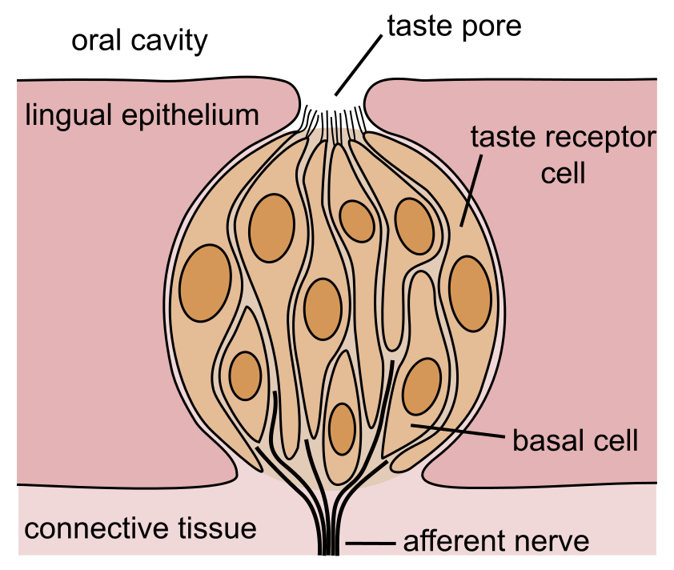

.jpg)
בִּשעת ארוחה טעימה עִם הורֵיכם עלתה על דַעתכם אֵי פעם השאֵלה מה גורם לכם להרגיש אֶת טעם האוכֶל, וּמה המַשמָעוּת של הַרגָשת הטעמים?
תְחוּשַת הטעם מתחילה בַּפֶּה: אנחנו לועסים והרוק מרטיב אֶת האוכל כדי לאַפשֵר אֶת הפֵּירוק שלו וּלְהָקֵל לִבלוע אותו. חלקים קְטנטנים של המזון נוגעים בַּלשון וּמַפעילים אֶת חַיישָנֵי הטעם. החַיישָנים האלֶה מְמוּקָמים על בַּלוּטוֹת קטנטנות על הלשון שנִראות כמו נקודות זעירות. חַיישָנֵי הטעם מְמַלְאים תפקיד חשוּב מאוד בְּזיהוי האוכל, והטעם - מתוק, חמוץ, מר, מלוח ואוּמָמִי ('טעים' בְּיַפָּנית) – הוא שמְאַפשֵר אֶת הזיהוי. לְכל מזון שאנחנו מַכניסים לְפִינוּ הֶרְכֵּב אחֵר וְכַמוּיוֹת אחרות של חומרים. כל חומר מְגָרֶה אֶת חַיישָנֵי הטעם בְּדֶרך אחרת, וּבְלִיווּי חוש הרֵיח החומרים מעניקים לַמזון אֶת טַעמוֹ היִיחוּדי. חַיישָנֵי הטעם מפעילים תָאֵי עָצָב, מַעבירים אֶת המידע לַמוח, והמוח מְשַדֵר לנו אֶת הטעם.
אמנם נעים מאוד לָחוּש טעם טוב בַּפֶּה, אך התפקיד העיקרי של חוש הטַעם קשוּר בְּהִישָׂרְדוּת. כל טעם מעביר לנו מידע על המזון שאנחנו אוכלים. הטעם המתוק מֵעיד שהמזון עשיר בְּסוּכָּרים, ולכן הגוף שלנו יכול להפיק מִמנוּ אנרגיה מרוּבָּה, וְכַנִראֶה זאת הסיבה שאנחנו אוהבים מאוד מאכלים מתוקים. הטעם המלוח מֵעיד שהמזון מֵכיל מְלָחים. אנחנו זקוקים לִמְלָחים כדי שפְּעילוּת הגוף שלנו תִהיה תַקינה. הטעם הֶחָמוץ מֵעיד על מזון חוּמְצִי, וּלְעיתים הוא מזהיר מִפּנֵי פרי לא בָּשֵל או מִפּנֵי מזון מקולקל (חַיידקים מַפְרישים חוּמְצָה). טעם אוּמָמִי מֵעיד על ריכּוּז גָבוה של חֶלְבּוֹן. החֶלבּוֹנים הם אַבנֵי הבְּנִייה של הגוף שלנו.
הטעם המר מזהיר אותנו מִפּנֵי סַכָּנה. אליו אנחנו רגישים יותר מִלַטְעמים האחרים, והסיבה פשוטה: אִם מכניסים לַפֶּה מזון רעיל, כדאי מאוד לָדַעת אֶת זה מיד, כי כַּמוּת קטנה שאוּלַי מספיקים לֶאכול אֵינה פוגעת.
אִם כן, חוש הטעם מְאַפשֵר לנו להעריך אֶת מִידַת התוֹעֶלת או הסכָּנה שֶיש בַּמזון. לְצד ההַעֲרָכה התְזוּנָתית הָאכילה מעניקה לנו מִגוָון רחב של חֲוָויוֹת בִּזכוּת שני חושים נוספים: חוש המגע (חוש המישוש), כלומר תְחוּשַת המזון בַּפֶּה, למשל, רך, קשֶה, פָּריך סְפוֹגי, וחוּש הָרֵיח. הרֵיח מַגיע אלינו דֶרך דַרכֵי הַנשימה
בִּשביל להמחיש אֶת הַשפָּעתו של חוש הרֵיח קחו תפוח עץ ותפוח אדמה לא מבושלים, קִלפו אותם, חִתכו לחתיכות באותו גודֶל וטעמו אותם בְּעֵיניים עצומות וּבְאף סתוּם. אתם יכולים לדעת אִם נגסתם בתפוח עץ או בתפוח אדמה? רוב הסיכויים שלא תצליחו. בַּפֶּה חשים בחמישה טעמים, ואִילו בָּאף יש מִגְוָון גדול בהרבּה של ריחות, והריחות האלֶה הם שנותנים לנו אֶת התְחוּשוֹת הרבּות שאנחנו חוֹוִים בִּזמן הָאכילה.
אוכל גורֵם לִתחושה נוסֶפת והיא הַחריפוּת. כְּשֵם שֶיש בַּפֶּה חַיישָנים של טעם, יש גם חַיישָנים של חוֹם וקור. אֶחד מִמַנְגְנוֹנֵי ההגנה של צמחים הוא פיתוח של חומרים אשר גורמים לִתְחוּשה לא נעימה בַּפֶּה - צריבה של סִרְפָּד או תְחוּשַת חוֹם חזקה מִפִּלפל חריף. בְּמַאכלים חריפים יש חומרים המפעילים אֶת חַיישָנֵי החוֹם בַּפֶּה וגורמים לַמוח לַחשוב שהחוֹם בַּפֶּה גדול מאוד. אִם כן, שלא כמו שאנשים רבּים חושבים, החריפות אֵינה טעם אֶלָא אַשְלָיה של חוֹם. בְּעֶצם מדוּבָּר בְּחוֹם או בקור (אִם אוכלים מֶנטָה).
אולי בַּפּעם הבָּאה שתשבו לֶאכול תִרצו לעצום אֶת העיניים וְלִבדוק מה 'אומֵר' לכם כל טעם שאתם חשים בו. בתיאבון!
